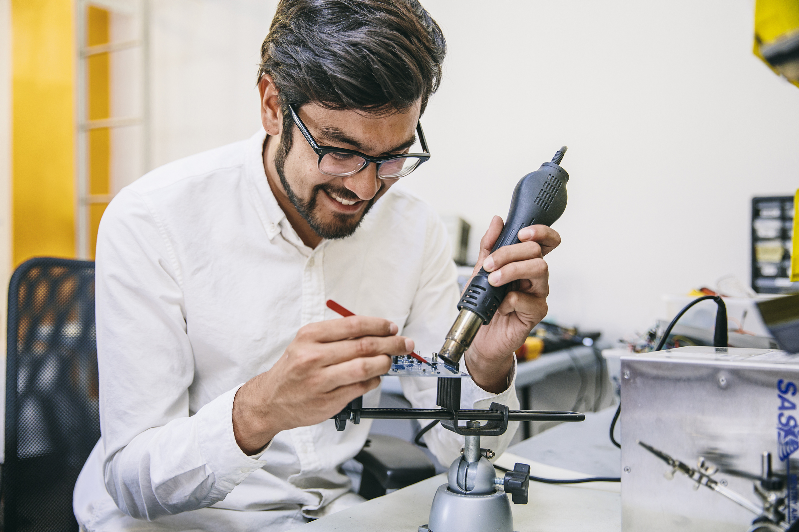
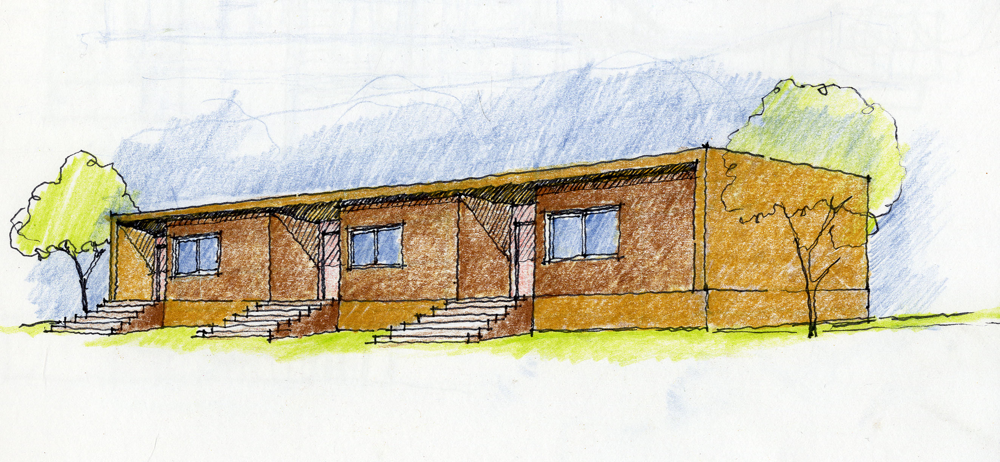

New operating systems powering millions of shipped products
At Google, I work on Fuchsia and Pigweed, two products pushing the state-of-the-art in operating system design. They power millions of devices and have brought tangible benefits to the product development process.
My focus has been developer experience, and I've been proud to ship greenfield development tools that elicit responses like this from their users:
- "This is a complete game-changer"
- "You have no idea what a difference this is going to make for us"
- "Once you use it, you don't know how you lived without it before"
I founded Pigweed's developer relations team, and my engagement with the open-source community has led to Pigweed being deployed on drones...
... and satellites.
A full-stack IoT platform for off-grid energy
Angaza makes life-changing products accessible and affordable to people in emerging markets, even those who live on less than $2 per day. With affordable access to livelihood necessities like solar lights and clean cookstoves, people without access to credit or traditional banking services can start on a path to financial inclusion.
I led the development of an IoT platform for off-grid solar energy products deployed in over 50 countries, providing clean energy to more than 2 million people. This work was truly full-stack—we built:
- microcontroller firmware for low-power devices
- robust backend infrastructure
- web and mobile applications running on a wide variety of devices
- data engineering pipelines ingesting information from devices in some of the least-connected parts of the world
I propsed and developed industry standards for the off-grid energy industry that were adopted in 2021. This dramatically increased access to the energy ladder throughout the developing world by introducing compatibility and interoperability between devices across the industry.
The world's first comprehensive post-disaster national building assessment
Immediately after Hurricanes Irma and Maria struck the Caribbean in 2017, I worked with the United Nations and the World Bank to ensure that reconstruction would be resilient against future disasters.
In partnership with Microsoft, we built mobile and web applications for geospatial data collection and analysis, with two challenges:
- The apps had to go live in a matter of days
- We couldn't count on having a consistent internet connection or power, either in the field or at HQ, and the data that came in each day immediately impacted recovery resource allocation the next day.
In the end, we achieved 100% coverage of each country we worked in, a first for the industry. The results played a crucial role in revising regional building codes to build resilience against future disasters, and directly supported the island nation of Dominica's goal to become the world's first climate-resilient nation. Since then, the technology has continued to be used to support disaster relief efforts around the world.
Rapid, safe, affordable housing in India
WorldHaus was a social enterprise incubated at IdeaLab to develop radically affordable housing products for families in India. We developed low‐cost, high‐speed home building systems, reducing the cost of construction by up to 30% and bringing safe, high quality housing in reach of thousands of families.
I was brought on as the founding engineer, and had to turn an idea ("what if we could capture the world's largest unserved housing market?") into reality—houses!
The key challenge: how do you fundamentally change the process of building while still creating houses that people want to live in?
My solution, in summary:
- A modular building system that could be constructed rapidly with unskilled labor
- The use of natural materials available locally, to reduce the cost, delay, and environmental impact of transporting materials long distances
- Strategic use of pre-fabricated materials to minimize costly and time-consuming concrete work
- Architectural styles and features that felt familiar and delightful to our customers in rural villages and urban slums
Did it work? Yes. We built houses that were better than the market standard for 30% less than market rates, and we provided safe housing to thousands.
Fixing a life-support system on the International Space Station
On the ISS, a mass spectrometer is used to monitor air composition and ensure that the air the astronauts breathe is safe. That air must be heated before analysis, which is accomplished with a halogen bulb. That bulb failed 10 times faster in space than it did on Earth, and for some reason, NASA hired a group of undergraduate engineering students to figure out why.
We got to test our theory in real microgravity, produced by running our experiment on NASA's reduced-gravity aircraft, or "vomit comet".
While my colleagues built a test apparatus, I wrote computer vision software that used synthetic schlieren photography to visualize and quantify the convective flow of air around the bulb in Earth's gravity and in microgravity.
The prognosis? Put a fan on the bulb.